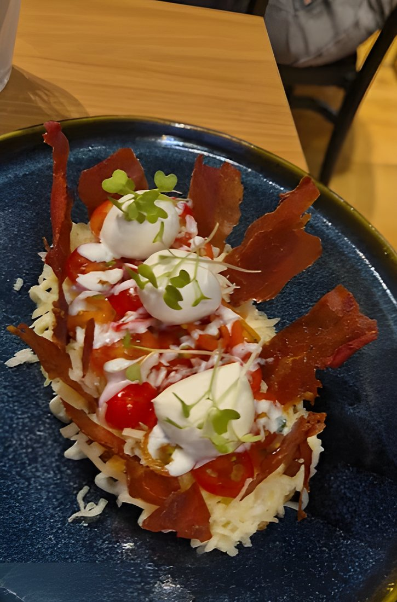
Toast especial
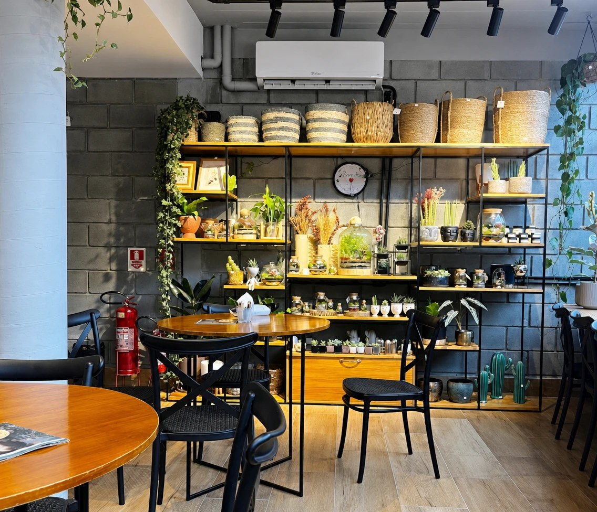
Quarta a domingo · 10h às 18h30
Café + ateliê botânico
Sente entre estantes de plantas e terrários, peça um café autoral e fique o tempo que quiser. Em São Caetano do Sul.
café é melhor quando é com gente
A imersão
Um terrário é um pequeno mundo vivo dentro do vidro. O Terrarium é essa ideia em escala real: verde por todos os lados, luz quente e uma mesa esperando você bem no meio.
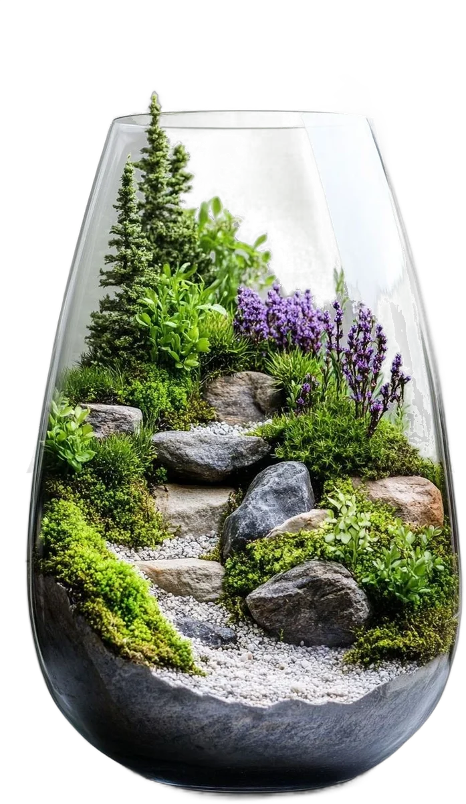
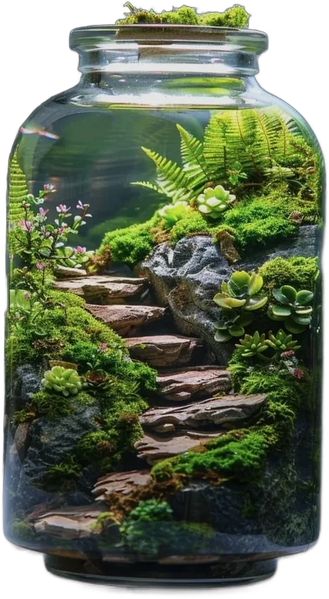
Novidades
O espaço
Estantes de plantas e terrários, mesas de madeira, luz quente e o neon que já virou ponto de foto. Venha para um espresso rápido ou para a tarde inteira.
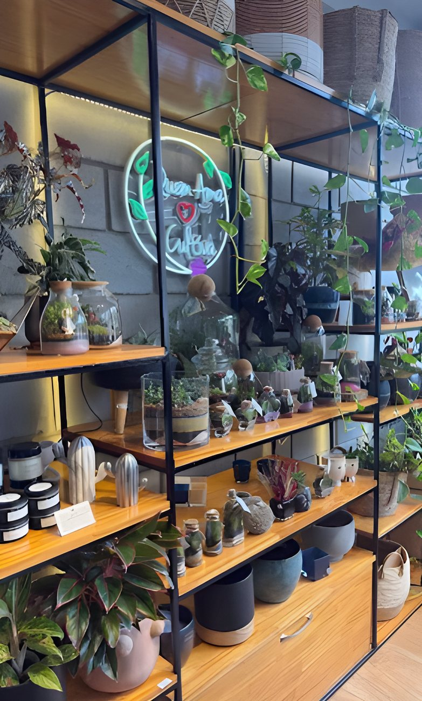
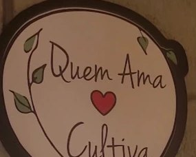
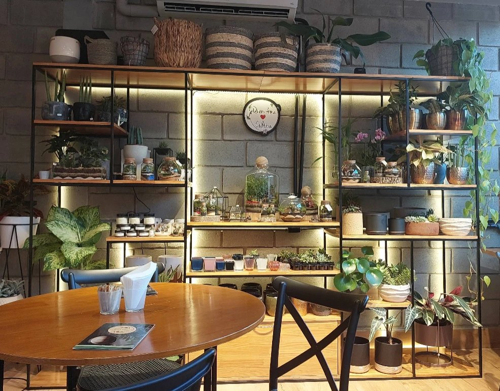
Ateliê botânico
Dentro do café funciona um ateliê botânico: terrários de vidro, suculentas, vasos e plantas que enchem o salão de verde. Um cantinho para quem gosta de verde tanto quanto de café.
Novidades do ateliê no InstagramGaleria
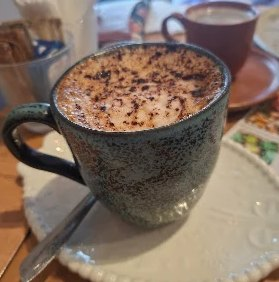
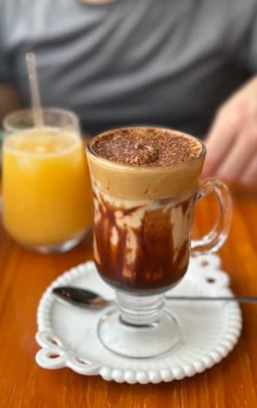
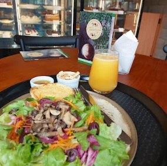
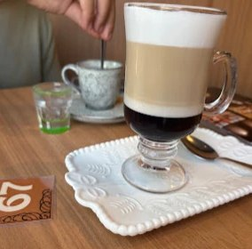
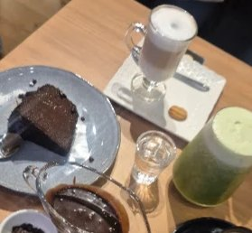
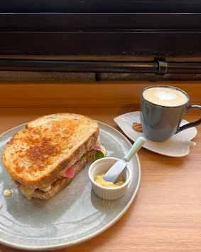
Conte como foi a sua visita. Sua avaliação no Google ajuda mais gente a descobrir o Terrarium.
Visite
| Segunda | Fechado |
|---|---|
| Terça | Fechado |
| Quarta | 10h às 18h30 |
| Quinta | 10h às 18h30 |
| Sexta | 10h às 18h30 |
| Sábado | 10h às 18h30 |
| Domingo | 10h às 18h30 |